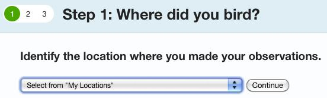
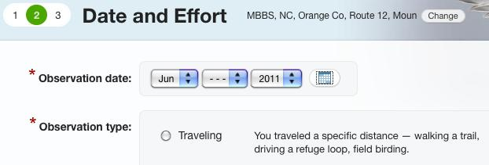
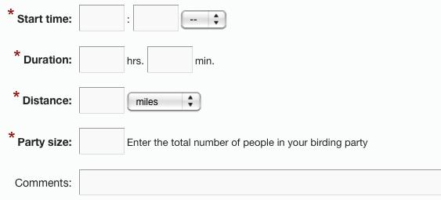
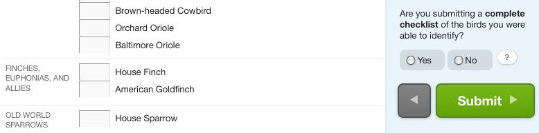

Procedures
More information about our procedures including descriptions and maps of our routes, a list of birds breeding in our area, and printable forms for MBBS data
Why eBird for reporting data?
- By using eBird, our numbers become available fo anyone to use for scientific analysis!
- It is easier to start an MBBS in other counties or in other states or wherever (see needs below)!
Entering Counts in Ebird
- Entering all habitat codes
Option for counting night birds* (beginning in 2013) … arrive at the starting point 15 minutes early (45 minutes before sunrise, approximately 5:15 at our time of year) and count all birds heard during those 15 minutes, and then start your first 3-minute count and continue the survey as usual. Enter counts for the extra 15 minutes in the Comments box (see below for an example).
Once you have run your route (review our procedures below) …
- add up the total number of each species for the entire 20 stops
- log into ebird.org how to log in
- after logging in, click the tab “Submit Observations” near the top
On the page that appears …

- choose your route in the drop-down menu “Select from My Locations” …
- then click “Continue”
On the next page …

- enter the date you ran your route
- click the button for “Traveling”
… which expands the page so you can enter …

- the start time (usually 5:30 – don’t forget to add AM)
- the duration (within 10 minutes or so)
- the distance covered (always 10.0 miles)
- the number (of observers) in your party (normally 1 or 2)
- and “Comments” about your route
Your comments should include …
- names of observers (for instance, “observers=Firstname Lastname, Firstname Lastname”)
- names of other participants such as driver or recorder (for instance, “others=Firstname Lastname”)
- weather such as temperature, cloud cover, and wind in general terms (for instance, “weather=75F, partly cloudy, light wind, patches of fog early”)
- the total number of vehicles during the 20 three-minute obervations (for instance, “vehicles=23”, with no spaces), and
- any change in the habitat at any stop (for instance, “habitat@16R=B”, with no spaces, meaning the new habitat code on the righthand side of the route at stop 16 is now B)
- any other notes or observations (for instance, “notes=Cooper’s Hawk flew past after the count at stop 4, 3 Eastern Screech-Owls, 2 Barred Owls, 1 Great Horned Owl, 4 Whip-poor-wills, 2 Chuck-wills-widows during 15 minutes before the start”)
- use semicolons to separate these types of information (also omit the quotes from the examples above)
Here’s an example of a complete entry in this box …
observers=Haven Wiley, John Doe; others=Minna Wiley; weather=75F, partly
cloudy, light wind, patches of fog early; vehicles=23; habitat@4L=S; notes=1
Barred Owl in 15 minutes before the startAfter entering these “Comments”, click “Continue” to reach the final page

where you can enter your totals in the appopriate boxes (scroll down as necessary).
Once your totals are entered and you reach the bottom of the page …
- click the button “Yes” for submitting a complete checklist
- and then click the big green button “Submit”

On the next page, you are congratulated on a job well done:
“Your checklist has been submitted! Please review it carefully and make any necessary changes.”
Notice that you can change anything you have entered (if you made a mistake).
Also notice the button near the top right corner “All Checklists”. Clicking this button takes you to a list of all checklists so far submitted!
This list of checklists, allows you to “Edit” or “Delete” any of them (in case you think of a mistake later … but please do not delete anybody else’s list!). You can also “Share” your checklist with another eBirder (or with your own eBird account).
Click the tab “My eBird” near the top to take you back to the MBBS home page … and finally “Sign Out” (although this step is not necessary if you close your web browser or the current tab).
More comments on submitting reports
Vehicles and habitat codes
A disadvantage of using eBird is that there is no easy way to enter the total number of vehicles on a route (those passing during the 20 three-minute observations) or any changes in habitat codes from year to year. By adding this information in the box for notes, it will be possible to retrieve it when data are downloaded from the Avian Knowledge Network, provided we use the format suggested above (for instance, “vehcles=17” and “habitat@7L=M”).
Locations and distances
The locations of the routes are the starting places (please let me know if you spot a significant error!). eBird suggests using the coordinates for the aproximate center of a traveling count, but for us the starting position is much more critical. Although our routes only involve driving 9.5 miles from stop 1 to stop 20, we include all birds recorded within 0.25 miles of the first and last stops, so the total distance for an MBBS route is 10.0 miles.